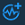

Generator tag editor#
What is a generator tag and what settings does it have.
Generator is a special type of virtual tags which periodically produces value. You can find the Generator tag editor in the View tags menu's header. Click the Create Generator tag icon  to open the editor.
You can set standard parameters: Name, Custom name, and Description in the respective fields.
The Update period setting defines intervals of value generation. There are two types of generators:
- Static integer value
- Random integer value
Generators of first type produce constant value. So, in the Generator parameters field you need to specify the only parameter: Static value to generate.
Random integer value generator creates values in a specified range. Settings Minimum value to generate and Maximum value to generate configure range borders.
Parent article:
- IDE overview
An overview of ControlMachines™ HMI project development component.
Related articles:
- Tag general settings
In this article, you can find short descriptions of tag general settings. - Tag history settings
Briefly about History settings menu. - View tags
This article is about the View tags menu that provides users with tools for working with tags.